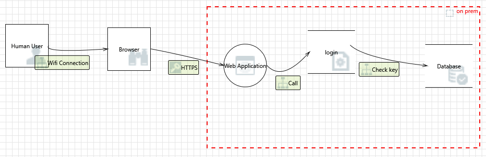
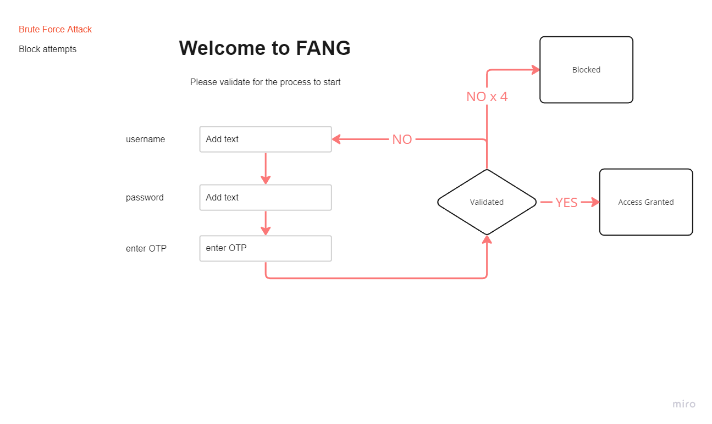

{kind=link}
Fang Services
Goal
This document outlines the applied ‘test early and test often’ methodology to enhance the security of the application and mitigate the risk of attacks. Following the Software Development Life Cycle (SDLC) model proposed by the Open Web Application Security Project (OWASP) , which consists of seven phases: definition, design, development, testing, deployment, maintenance, and retirement. In each phase, this project performed various security activities, such as threat modeling, automated testing (using Snyk), code review, and pentesting techniques, to identify and address any vulnerabilities or weaknesses in the application.
Application Vulnerability Score
| PHASE | Vulnerability Score |
|---|---|
| Before Development Begins | CRITICAL |
| During Design | CRITICAL |
| Before Launch | |
| During Deployment |
Pentesting
Fang Service is an application that will follow the Penetration Testing Execution Standards providing cybersecurity services for Small Office Home Office (SOHO).
MVP:
- Verification
- Login
- Network Scanning Tool
This application is built using:
- Python,
- Flask, and
- SQLite3
This application will be hosted on-premises instead of a cloud service provider.
Before Development Begins
A threat model, using Microsoft Thread Modeling Tool, was created to identify the possible threats on a typical login form. The results identified an extensive list of threats that can be avoided during built and the basis of the metrics criteria.
Threat Model
The standard Login Threat Model based on original design 
{kind=link}
Measurement and Metrics Criteria and Ensure Traceability
Denial Of Service
-
Potential Excessive Resource Consumption for Web Application or check login credentials
- Use Multi-Factor Authentication (MFA)
- Limit Login Attempts
Other - Credential Storage : Store user credentials securely using hashing and salting techniques see database
- Credential Verification : hash the provided password in the same way as the stored hash, and compare the two. If they match, the password is correct.see cryptography
- Secure Transmission : Always transmit credentials securely using encryption protocols like HTTPS.see network
- Use load balancing : Distribute traffic across multiple serverssee network
- Implement server-side caching : This can reduce the number of requests to the serversee network
- Monitor and log server activity : This can help detect and respond to unusual resource consumptionsee network
-
Data Flow HTTPS Is Potentially Interrupted
- Implement a Web Application Firewall (WAF)see network
- Implement a Web Application Firewall (WAF)see network
- Potential Process Crash or Stop for Web Application
outside of scope
Elevation of Privilege
- Cross Site Request Forgery
- Elevation by Changing the Execution Flow in Web Application
- Web Application May be Subject to Elevation of Privilege Using Remote Code Execution
- Elevation Using Impersonation
Information Disclosure
- Weak Credential Storage
Repudiation
- Potential Weak Protections for Audit Data
- Insufficient Auditing
- Lower Trusted Subject Updates Logs
- Data Logs from an Unknown Source
- Potential Data Repudiation by Web Application
Tampering
- Risks from Logging
- Cross Site Scripting
Spoofing
- Spoofing of Destination Data Store login
- Spoofing the Browser External Entity
- Spoofing of Destination Data Store SQL Database see database
- Spoofing of Source Data Store check login credentials see database
Authentication : Use standard authentication mechanisms to verify the identity of the source data store. This could involve using secure protocols such as HTTPS which provide built-in authentication.
Input Validation : Ensure that all inputs are validated and sanitized to prevent malicious inputs from being processed.
Least Privilege Access : Implement least privilege access controls so that even if an attacker is able to spoof a source, they would not have sufficient privileges to perform harmful actions
Monitoring and Logging : Regularly monitor and log activities to detect any unusual behavior or access patterns
During Design
Security Requirements
- User management
- Authentication
- Authorization
- Data confidentiality
- Integrity
- Accountability
- Session management
- Transport security
- Tiered system segregation
Step 1 : Basic Login and possible vulnerabilities
Is started out with a standard login page and listed the common vulnerabilities.
{kind=link}
Step 2 : Improved vulnerabilities through design
Redesigned the login page to remove design vulnerabilities:
{kind=link}
{kind=link}
{kind=link}
{kind=link}
{kind=link}
{kind=link}
Logging returning after user has completed the verification 
{kind=link}
During Development
Lessons learnt
💪 Application headers to prevent cross site scripting
@app.after_request
def add_security_headers(resp):
resp.headers['Content-Security-Policy'] = "default-src 'self'"
return resp
💢 The line between security and convenience
The first hurdle is to reduce the risks wihtout building an annoying user experience.
During the development phase the design concept was combined with the practical aproach with questions like:
- Remove the risk of a weak password with a unique passphrase (token) emailed to user,
- Enforce One Time Passcode,
- Implement captcha,
- all of the above
{kind=link}
Secure: Flask provides built-in support for handling common web security features like cross-site request forgery (CSRF) protection and secure cookie handling.
{kind=link}